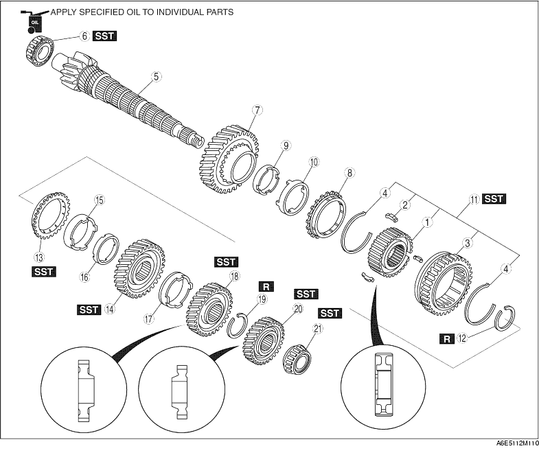

1. Assemble in the order shown in the figure.

|
1 |
1st/2nd clutch hub |
|
2 |
Synchronizer keys |
|
3 |
Clutch hub sleeve (reverse gear) |
|
4 |
Synchronizer key spring |
|
5 |
Secondary shaft gear |
|
6 |
Bearing (secondary shaft end) |
|
7 |
1st gear (See 1st Gear, 1st Synchronizer Ring, and 1st/2nd Clutch Hub Component Assembly Note) |
|
8 |
Synchronizer ring |
|
9 |
Inner cone |
|
10 |
Double cone |
|
11 |
1st/2nd clutch hub component |
|
12 |
Retaining ring |
|
13 |
Synchronizer ring |
|
14 |
2nd gear |
|
15 |
Double cone |
|
16 |
Inner cone |
|
17 |
Friction damper |
|
18 |
Secondary 3rd gear |
|
19 |
Retaining ring |
|
20 |
Secondary 4th gear |
|
21 |
Bearing |
1. Install the synchronizer key springs in the clutch hub with the hooks in the grooves to hold the three synchronizer keys in place.
1. Install the new bearing using the SST.
1. Assemble the 1st gear, 1st synchronizer ring, inner cone, double cone and 1st/2nd clutch hub component, as shown in the figure.
2. Press the 1st/2nd clutch hub component on using the SST.
1. Install the 2nd synchronizer ring and 2nd gear.
2. Install the secondary 3rd gear using the SST.
1. Install the secondary 4th gear and the bearing using the SST.
2. Measure the clearance between the 1st gear and the differential drive gear.
3. Measure the clearance between the 2nd gear and the secondary 3rd gear.